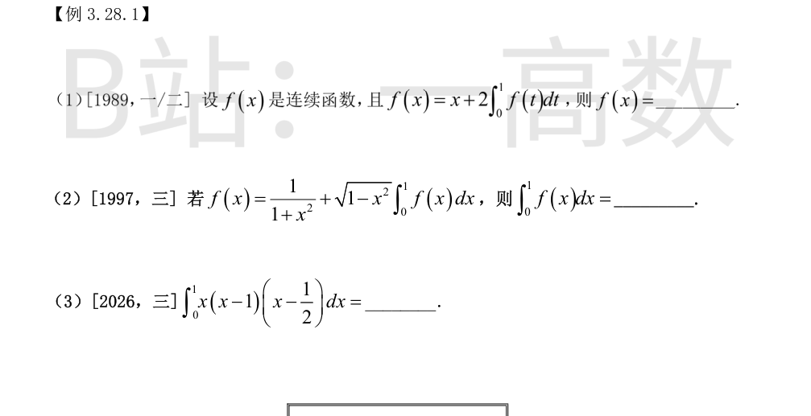
记 $A=\int_0^1 f(t)dt$（为常数），则 $f(x)=x+2A$。
两边在 $[0,1]$ 上积分：
$$A=\int_0^1 x\,dx+2A\int_0^1 dx=\frac{1}{2}+2A,$$
解得 $A=-\frac{1}{2}$。
故 $f(x)=x-1$。
记 $A=\int_0^1 f(x)dx$，则 $f(x)=\frac{1}{1+x^2}+A\sqrt{1-x^2}$。
在 $[0,1]$ 上积分，并注意 $\int_0^1\frac{dx}{1+x^2}=\frac{\pi}{4}$，$\int_0^1\sqrt{1-x^2}dx=\frac{\pi}{4}$（四分之一单位圆面积）：
$$A=\frac{\pi}{4}+A\cdot\frac{\pi}{4}.$$
解 $A\left(1-\frac{\pi}{4}\right)=\frac{\pi}{4}$，得 $A=\frac{\pi}{4-\pi}$。
令 $u=x-\frac{1}{2}$，则 $x(x-1)=\left(u+\frac{1}{2}\right)\left(u-\frac{1}{2}\right)=u^2-\frac{1}{4}$，被积函数化为
$$\left(u^2-\frac{1}{4}\right)u=u^3-\frac{u}{4},$$
是 $u$ 的奇函数，而积分区间 $\left[-\frac{1}{2},\frac{1}{2}\right]$ 对称，故
$$\int_0^1 x(x-1)\left(x-\frac{1}{2}\right)dx=0.$$
（直接展开验证：$x^3-\frac{3}{2}x^2+\frac{1}{2}x$ 积分得 $\frac{1}{4}-\frac{1}{2}+\frac{1}{4}=0$。）
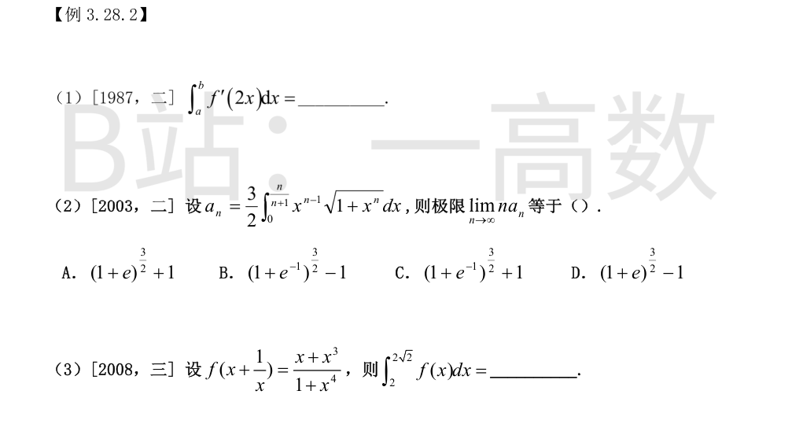
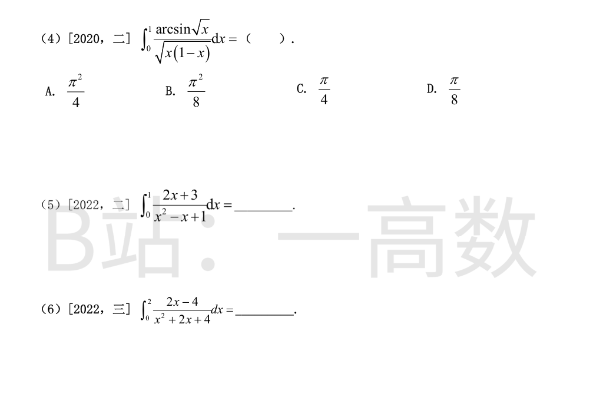
令 $u=2x$，$du=2dx$：
$$\int_a^b f'(2x)dx=\frac{1}{2}\int_{2a}^{2b}f'(u)du=\frac{1}{2}\left[f(2b)-f(2a)\right].$$
令 $u=1+x^n$，$du=nx^{n-1}dx$：
$$a_n=\frac{3}{2n}\int_1^{1+\left(\frac{n}{n+1}\right)^n}\sqrt{u}\,du=\frac{1}{n}\left[\left(1+\left(\frac{n}{n+1}\right)^n\right)^{3/2}-1\right].$$
由 $\left(\frac{n}{n+1}\right)^n=\left(1+\frac{1}{n}\right)^{-n}\to e^{-1}$，得
$$\lim_{n\to\infty}na_n=\left(1+e^{-1}\right)^{3/2}-1.$$
对照选项选 B。
分子分母同除 $x^2$（$x>0$）：
$$f\left(x+\frac{1}{x}\right)=\frac{x+\frac{1}{x}}{x^2+\frac{1}{x^2}}=\frac{x+\frac{1}{x}}{\left(x+\frac{1}{x}\right)^2-2},$$
故 $f(t)=\frac{t}{t^2-2}$。
$$\int_2^{2\sqrt{2}}f(x)dx=\int_2^{2\sqrt{2}}\frac{x}{x^2-2}dx=\frac{1}{2}\ln\left(x^2-2\right)\Big|_2^{2\sqrt{2}}=\frac{1}{2}(\ln 6-\ln 2)=\frac{1}{2}\ln 3.$$
（当 $x\in[2,2\sqrt2]$ 时 $x^2-2>0$，无奇点。）
令 $t=\arcsin\sqrt{x}$，则 $x=\sin^2 t$，$dx=2\sin t\cos t\,dt$，$\sqrt{x(1-x)}=\sin t\cos t$，$t:0\to\frac{\pi}{2}$。
$$\int_0^1\frac{\arcsin\sqrt{x}}{\sqrt{x(1-x)}}dx=\int_0^{\pi/2}t\cdot 2\,dt=\left.t^2\right|_0^{\pi/2}=\frac{\pi^2}{4}.$$
选 A。
分子拆为 $2x+3=(2x-1)+4$：
$$\int_0^1\frac{2x-1}{x^2-x+1}dx=\ln\left(x^2-x+1\right)\Big|_0^1=\ln 1-\ln 1=0,$$
$$\int_0^1\frac{4}{x^2-x+1}dx=4\int_0^1\frac{dx}{\left(x-\frac{1}{2}\right)^2+\frac{3}{4}}=\frac{8}{\sqrt{3}}\left[\arctan\frac{2x-1}{\sqrt{3}}\right]_0^1=\frac{8}{\sqrt{3}}\left(\frac{\pi}{6}+\frac{\pi}{6}\right)=\frac{8\pi}{3\sqrt{3}}=\frac{8\sqrt{3}\pi}{9}.$$
故原式 $=\frac{8\sqrt{3}\pi}{9}$。
分子拆为 $2x-4=(2x+2)-6$：
$$\int_0^2\frac{2x+2}{x^2+2x+4}dx=\ln\left(x^2+2x+4\right)\Big|_0^2=\ln 12-\ln 4=\ln 3,$$
$$\int_0^2\frac{6}{x^2+2x+4}dx=6\int_0^2\frac{dx}{(x+1)^2+3}=\frac{6}{\sqrt{3}}\left[\arctan\frac{x+1}{\sqrt{3}}\right]_0^2=2\sqrt{3}\left(\frac{\pi}{3}-\frac{\pi}{6}\right)=\frac{\sqrt{3}\pi}{3}.$$
故原式 $=\ln 3-\frac{\sqrt{3}}{3}\pi$。
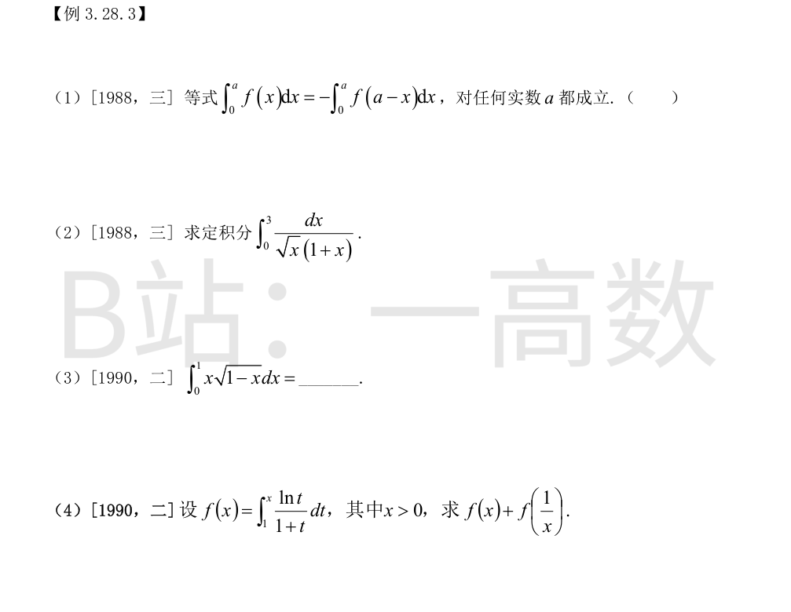
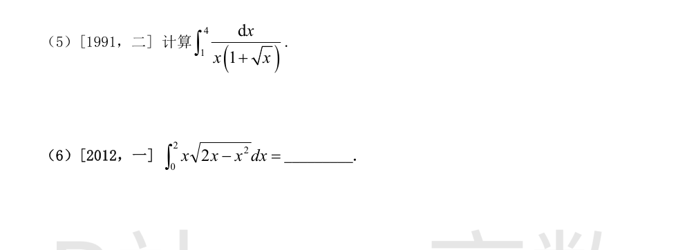
对左边作换元 $x=a-t$：
$$\int_0^a f(x)dx=\int_0^a f(a-t)dt=\int_0^a f(a-x)dx,$$
正确的恒等式不带负号（对任何实数 $a$ 成立）。
反例：取 $f\equiv 1$，左边 $=a$，而带负号的右边 $=-a$，$a\ne 0$ 时不相等。
故该等式不成立，判 $(\times)$。
令 $t=\sqrt{x}$，$x=t^2$，$dx=2t\,dt$，$t:0\to\sqrt{3}$：
$$\int_0^3\frac{dx}{\sqrt{x}(1+x)}=\int_0^{\sqrt{3}}\frac{2t\,dt}{t(1+t^2)}=2\int_0^{\sqrt{3}}\frac{dt}{1+t^2}=2\arctan\sqrt{3}=\frac{2\pi}{3}.$$
（另法：$\int\frac{dx}{\sqrt{x}(1+x)}=2\arctan\sqrt{x}$。）
令 $u=1-x$：
$$\int_0^1 x\sqrt{1-x}\,dx=\int_0^1(1-u)u^{1/2}du=\int_0^1\left(u^{1/2}-u^{3/2}\right)du=\frac{2}{3}-\frac{2}{5}=\frac{4}{15}.$$
（另法：令 $x=\sin^2 t$ 化为 $2\int_0^{\pi/2}\sin^2 t\cos^2 t\,dt$，结果相同。）
对 $f\left(\frac{1}{x}\right)=\int_1^{1/x}\frac{\ln t}{1+t}dt$ 作换元 $t=\frac{1}{u}$（$dt=-\frac{du}{u^2}$）：
$$f\left(\frac{1}{x}\right)=\int_1^x\frac{-\ln u}{\frac{1+u}{u}}\cdot\left(-\frac{du}{u^2}\right)=\int_1^x\frac{\ln u}{u(1+u)}du.$$
相加：
$$f(x)+f\left(\frac{1}{x}\right)=\int_1^x\left[\frac{1}{1+t}+\frac{1}{t(1+t)}\right]\ln t\,dt=\int_1^x\frac{\ln t}{t}dt=\frac{1}{2}\ln^2 x.$$
（当 $x>0$ 时 $\frac{1}{x}>0$，换元合法；$x=1$ 时两边均为 0。）
令 $t=\sqrt{x}$，$x=t^2$，$dx=2t\,dt$，$t:1\to 2$：
$$\int_1^4\frac{dx}{x(1+\sqrt{x})}=\int_1^2\frac{2t\,dt}{t^2(1+t)}=2\int_1^2\frac{dt}{t(1+t)}.$$
由 $\frac{1}{t(1+t)}=\frac{1}{t}-\frac{1}{1+t}$：
$$2\int_1^2\left(\frac{1}{t}-\frac{1}{1+t}\right)dt=2\left[\ln t-\ln(1+t)\right]_1^2=2\left[\left(\ln 2-\ln 3\right)-\left(0-\ln 2\right)\right]=2\ln\frac{4}{3}=\ln\frac{16}{9}.$$
故原式 $=\ln\frac{16}{9}$。
$2x-x^2=1-(x-1)^2$。令 $u=x-1$：
$$\int_0^2 x\sqrt{2x-x^2}\,dx=\int_{-1}^{1}(u+1)\sqrt{1-u^2}\,du.$$
$u\sqrt{1-u^2}$ 为奇函数，积分为 0；$\int_{-1}^{1}\sqrt{1-u^2}\,du$ 为上半单位圆面积 $=\frac{\pi}{2}$。
故原式 $=\frac{\pi}{2}$。
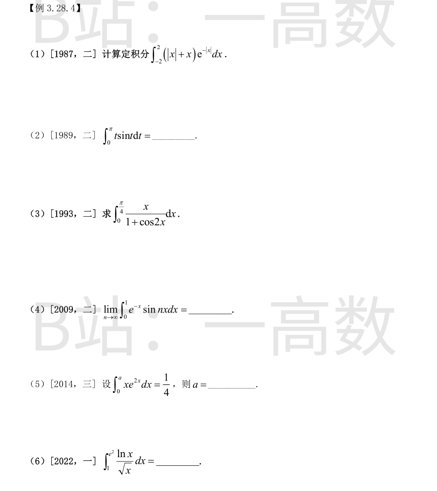
$x\in[-2,0]$ 时 $|x|+x=0$；$x\in[0,2]$ 时 $|x|+x=2x$，且 $e^{-|x|}=e^{-x}$。故
$$\int_{-2}^{2}\left(|x|+x\right)e^{-|x|}dx=\int_0^2 2xe^{-x}dx.$$
分部积分：
$$\int_0^2 2xe^{-x}dx=2\left[-(x+1)e^{-x}\right]_0^2=2\left(-3e^{-2}+1\right)=2-\frac{6}{e^2}.$$
（$\int xe^{-x}dx=-(x+1)e^{-x}+C$。）
分部积分：
$$\int_0^{\pi}t\sin t\,dt=\left[-t\cos t\right]_0^{\pi}+\int_0^{\pi}\cos t\,dt=\pi+\left[\sin t\right]_0^{\pi}=\pi.$$
（几何解释：$\sin t$ 与 $t$ 的乘积积分，对称性给出 $\frac{\pi}{2}\cdot 2$。）
由 $1+\cos 2x=2\cos^2 x$：
$$\int_0^{\pi/4}\frac{x}{1+\cos 2x}dx=\frac{1}{2}\int_0^{\pi/4}x\sec^2 x\,dx=\frac{1}{2}\left(\left[x\tan x\right]_0^{\pi/4}-\int_0^{\pi/4}\tan x\,dx\right).$$
$\int\tan x\,dx=-\ln|\cos x|$，故
$$=\frac{1}{2}\cdot\frac{\pi}{4}+\frac{1}{2}\left[\ln\cos x\right]_0^{\pi/4}=\frac{\pi}{8}+\frac{1}{2}\ln\frac{\sqrt{2}}{2}=\frac{\pi}{8}-\frac{1}{4}\ln 2.$$
故原式 $=\frac{\pi}{8}-\frac{1}{4}\ln 2$。
分部积分两次可解出（$I=\int e^{-x}\sin nx\,dx$，设 $I_1=\int e^{-x}\cos nx\,dx$，消元得）
$$\int e^{-x}\sin nx\,dx=-\frac{e^{-x}\left(\sin nx+n\cos nx\right)}{1+n^2}+C,$$
（求导验证：$\frac{d}{dx}$ 后分子 $=e^{-x}(\sin nx+n\cos nx)-e^{-x}(n\cos nx-n^2\sin nx)=e^{-x}(1+n^2)\sin nx$。）
于是
$$\int_0^1 e^{-x}\sin nx\,dx=\frac{n-e^{-1}\left(\sin n+n\cos n\right)}{1+n^2},$$
分子为 $n$ 的一次式而分母为 $n^2$，故 $n\to\infty$ 时极限为 $0$。
$$\int_0^a xe^{2x}dx=\left[\frac{x}{2}e^{2x}-\frac{1}{4}e^{2x}\right]_0^a=\frac{a}{2}e^{2a}-\frac{1}{4}e^{2a}+\frac{1}{4}=\frac{e^{2a}}{4}(2a-1)+\frac{1}{4}.$$
令其等于 $\frac{1}{4}$：$\frac{e^{2a}}{4}(2a-1)=0$，而 $e^{2a}>0$，故 $2a-1=0$，即 $a=\frac{1}{2}$。
令 $x=t^2$（$t:\,1\to e$），$dx=2t\,dt$，$\ln x=2\ln t$：
$$\int_1^{e^2}\frac{\ln x}{\sqrt{x}}dx=\int_1^e\frac{2\ln t}{t}\cdot 2t\,dt=4\int_1^e\ln t\,dt=4\left[t\ln t-t\right]_1^e=4\left[(e-e)-(0-1)\right]=4.$$
（另法：分部积分原式 $=\left[2\sqrt{x}\ln x-4\sqrt{x}\right]_1^{e^2}=0-(-4)=4$。）
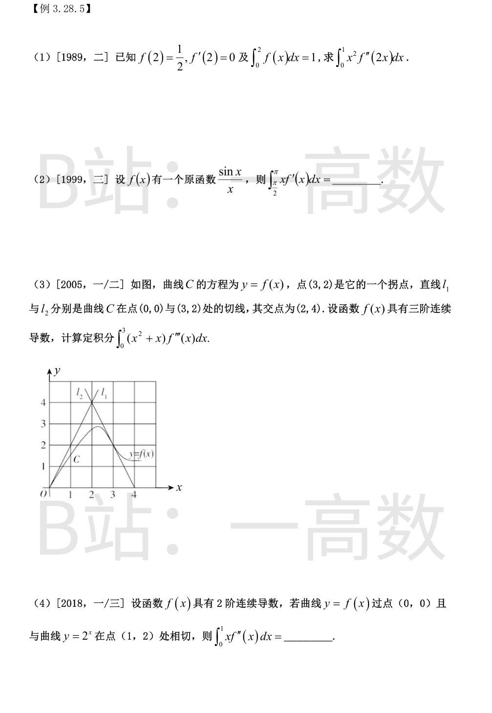
令 $u=2x$，$dx=\frac{du}{2}$，$u:0\to 2$：
$$\int_0^1 x^2 f''(2x)dx=\frac{1}{2}\int_0^2\frac{u^2}{4}f''(u)du=\frac{1}{8}\int_0^2 u^2 f''(u)du.$$
分部积分：
$$\int_0^2 u^2 f''(u)du=\left[u^2 f'(u)\right]_0^2-2\int_0^2 u f'(u)du=4f'(2)-2\left(\left[u f(u)\right]_0^2-\int_0^2 f(u)du\right).$$
代入 $f'(2)=0$，$2f(2)=1$，$\int_0^2 f=1$：
$$=0-2(1-1)=0.$$
故原积分 $=\frac{1}{8}\cdot 0=0$。
由题意 $f(x)=\left(\frac{\sin x}{x}\right)'=\frac{x\cos x-\sin x}{x^2}$，且 $\int f(x)dx=\frac{\sin x}{x}+C$。
分部积分：
$$\int_{\pi/2}^{\pi}xf'(x)dx=\left[xf(x)\right]_{\pi/2}^{\pi}-\int_{\pi/2}^{\pi}f(x)dx=\left[\cos x-\frac{\sin x}{x}\right]_{\pi/2}^{\pi}-\left[\frac{\sin x}{x}\right]_{\pi/2}^{\pi}.$$
第一段：$\left(-1-0\right)-\left(0-\frac{2}{\pi}\right)=-1+\frac{2}{\pi}$；第二段：$0-\frac{2}{\pi}=-\frac{2}{\pi}$。
$$\text{原式}=\left(-1+\frac{2}{\pi}\right)-\left(-\frac{2}{\pi}\right)=\frac{4}{\pi}-1.$$
（避开 $x=0$，区间 $[\frac{\pi}{2},\pi]$ 上一切运算合法。）
由图与条件读出：$f(0)=0$，$f(3)=2$，拐点处 $f''(3)=0$；
$l_1$ 过 $(0,0)$ 与 $(2,4)$：$f'(0)=\frac{4-0}{2-0}=2$；
$l_2$ 过 $(3,2)$ 与 $(2,4)$：$f'(3)=\frac{4-2}{2-3}=-2$。
分部积分：
$$\int_0^3(x^2+x)f'''(x)dx=\left[(x^2+x)f''(x)\right]_0^3-\int_0^3(2x+1)f''(x)dx=12f''(3)-\left(\left[(2x+1)f'(x)\right]_0^3-2\int_0^3 f'(x)dx\right).$$
代入各值：
$$=0-\left(7f'(3)-f'(0)\right)+2\left(f(3)-f(0)\right)=-\left(7\times(-2)-2\right)+2\times 2=16+4=20.$$
故原积分 $=20$。
由条件：$f(0)=0$，$f(1)=2$（过同一点），$f'(1)=\left.2^x\ln 2\right|_{x=1}=2\ln 2$（相切）。
分部积分：
$$\int_0^1 xf''(x)dx=\left[xf'(x)\right]_0^1-\int_0^1 f'(x)dx=f'(1)-\left(f(1)-f(0)\right)=2\ln 2-2.$$
故原积分 $=2\ln 2-2$。
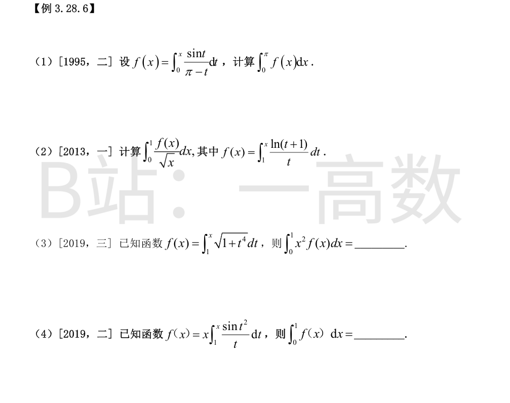
分部积分：
$$\int_0^{\pi}f(x)dx=\left[xf(x)\right]_0^{\pi}-\int_0^{\pi}xf'(x)dx=\pi f(\pi)-\int_0^{\pi}\frac{x\sin x}{\pi-x}dx.$$
其中 $f(\pi)=\int_0^{\pi}\frac{\sin t}{\pi-t}dt$，令 $u=\pi-t$ 得 $f(\pi)=\int_0^{\pi}\frac{\sin u}{u}du$；
第二个积分令 $u=\pi-x$ 得 $\int_0^{\pi}\frac{(\pi-u)\sin u}{u}du$。
$$\text{原式}=\pi\int_0^{\pi}\frac{\sin u}{u}du-\int_0^{\pi}\frac{(\pi-u)\sin u}{u}du=\int_0^{\pi}\sin u\,du=2.$$
故 $\int_0^{\pi}f(x)dx=2$。
分部积分（$u=f(x)$，$dv=\frac{dx}{\sqrt{x}}$，$v=2\sqrt{x}$；$f(1)=0$，$x=0$ 处 $\sqrt{x}f(x)\to 0$）：
$$\int_0^1\frac{f(x)}{\sqrt{x}}dx=\left[2\sqrt{x}f(x)\right]_0^1-\int_0^1 2\sqrt{x}\cdot\frac{\ln(1+x)}{x}dx=-2\int_0^1\frac{\ln(1+x)}{\sqrt{x}}dx.$$
令 $x=t^2$：$\int_0^1\frac{\ln(1+x)}{\sqrt{x}}dx=2\int_0^1\ln(1+t^2)dt$。
由 $\int\ln(1+t^2)dt=t\ln(1+t^2)-2t+2\arctan t$：
$$2\int_0^1\ln(1+t^2)dt=2\left(\ln 2-2+\frac{\pi}{2}\right)=2\ln 2-4+\pi.$$
故原式 $=-2\left(2\ln 2-4+\pi\right)=8-2\pi-4\ln 2$。
分部积分（$f(0)=f(1)=0$）：
$$\int_0^1 x^2 f(x)dx=\left[\frac{x^3}{3}f(x)\right]_0^1-\frac{1}{3}\int_0^1 x^3\sqrt{1+x^4}\,dx=-\frac{1}{3}\int_0^1 x^3\sqrt{1+x^4}\,dx.$$
令 $u=1+x^4$，$du=4x^3dx$：
$$\int_0^1 x^3\sqrt{1+x^4}\,dx=\frac{1}{4}\int_1^2 u^{1/2}du=\frac{1}{4}\cdot\frac{2}{3}\left(2^{3/2}-1\right)=\frac{2\sqrt{2}-1}{6}.$$
故原式 $=-\frac{1}{3}\cdot\frac{2\sqrt{2}-1}{6}=\frac{1-2\sqrt{2}}{18}$。
记 $F(x)=\int_1^x\frac{\sin t^2}{t}dt$，则 $f(x)=xF(x)$，$F(1)=0$，$F'(x)=\frac{\sin x^2}{x}$。
分部积分：
$$\int_0^1 f(x)dx=\left[\frac{x^2}{2}F(x)\right]_0^1-\frac{1}{2}\int_0^1 x^2 F'(x)dx=0-\frac{1}{2}\int_0^1 x\sin x^2\,dx.$$
$$\int_0^1 x\sin x^2\,dx=\left[-\frac{\cos x^2}{2}\right]_0^1=\frac{1-\cos 1}{2}.$$
故原式 $=-\frac{1}{2}\cdot\frac{1-\cos 1}{2}=\frac{\cos 1-1}{4}$。
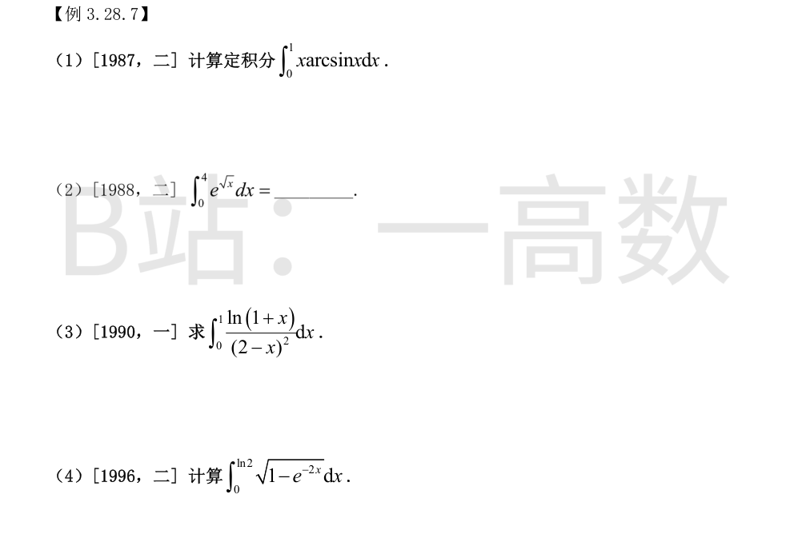
分部积分（取 $u=\arcsin x$，$dv=x\,dx$）：
$$\int_0^1 x\arcsin x\,dx=\left[\frac{x^2}{2}\arcsin x\right]_0^1-\frac{1}{2}\int_0^1\frac{x^2}{\sqrt{1-x^2}}dx=\frac{\pi}{4}-\frac{1}{2}J.$$
对 $J=\int_0^1\frac{x^2}{\sqrt{1-x^2}}dx$ 令 $x=\sin\theta$：$J=\int_0^{\pi/2}\sin^2\theta\,d\theta=\frac{\pi}{4}$。
故原式 $=\frac{\pi}{4}-\frac{\pi}{8}=\frac{\pi}{8}$。
令 $t=\sqrt{x}$，$x=t^2$，$dx=2t\,dt$，$t:0\to 2$：
$$\int_0^4 e^{\sqrt{x}}dx=2\int_0^2 te^t dt=2\left[te^t-e^t\right]_0^2=2\left[(2e^2-e^2)-(0-1)\right]=2\left(e^2+1\right).$$
注意 $\frac{1}{(2-x)^2}=\left(\frac{1}{2-x}\right)'$。分部积分：
$$\int_0^1\frac{\ln(1+x)}{(2-x)^2}dx=\left[\frac{\ln(1+x)}{2-x}\right]_0^1-\int_0^1\frac{1}{2-x}\cdot\frac{1}{1+x}dx=\ln 2-\int_0^1\frac{dx}{(2-x)(1+x)}.$$
部分分式：$\frac{1}{(2-x)(1+x)}=\frac{1}{3}\left(\frac{1}{2-x}+\frac{1}{1+x}\right)$，故
$$\int_0^1\frac{dx}{(2-x)(1+x)}=\frac{1}{3}\left[-\ln(2-x)+\ln(1+x)\right]_0^1=\frac{1}{3}(0+\ln 2+\ln 2-0)=\frac{2}{3}\ln 2.$$
故原式 $=\ln 2-\frac{2}{3}\ln 2=\frac{1}{3}\ln 2$。
令 $t=\sqrt{1-e^{-2x}}$，则 $e^{-2x}=1-t^2$，$x=-\frac{1}{2}\ln(1-t^2)$，$dx=\frac{t}{1-t^2}dt$；$x:0\to\ln 2$ 对应 $t:0\to\frac{\sqrt{3}}{2}$。
$$\int_0^{\ln 2}\sqrt{1-e^{-2x}}\,dx=\int_0^{\sqrt{3}/2}\frac{t^2}{1-t^2}dt=\int_0^{\sqrt{3}/2}\left(-1+\frac{1}{1-t^2}\right)dt=\left[-t+\frac{1}{2}\ln\frac{1+t}{1-t}\right]_0^{\sqrt{3}/2}.$$
$t=\frac{\sqrt{3}}{2}$ 时 $\frac{1+t}{1-t}=\frac{2+\sqrt{3}}{2-\sqrt{3}}=(2+\sqrt{3})^2$，故
$$\text{原式}=-\frac{\sqrt{3}}{2}+\ln(2+\sqrt{3}).$$
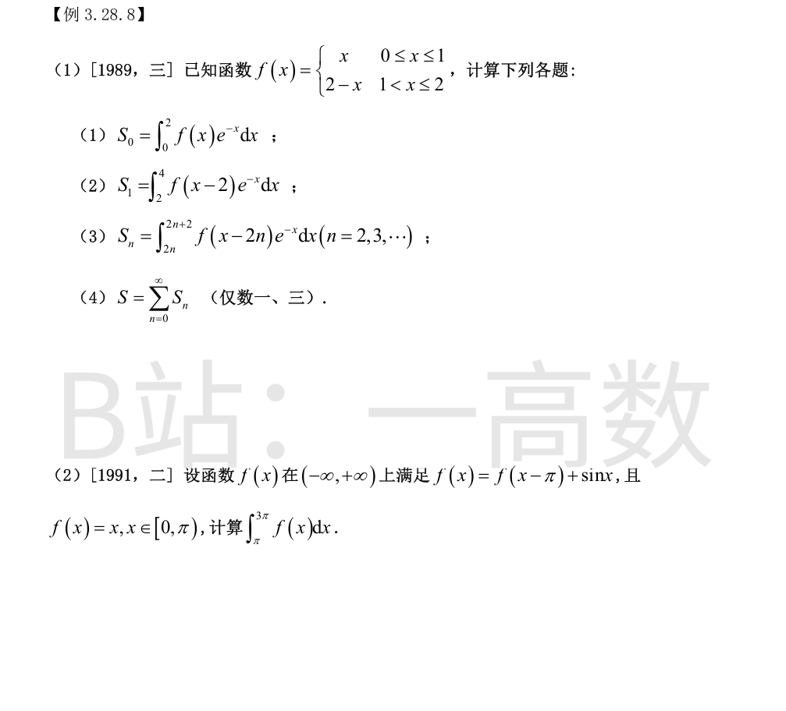
分段积分：
$$S_0=\int_0^1 xe^{-x}dx+\int_1^2(2-x)e^{-x}dx.$$
第一段：$\int_0^1 xe^{-x}dx=\left[-(x+1)e^{-x}\right]_0^1=1-\frac{2}{e}$。
第二段：注意 $\frac{d}{dx}\left[(x-1)e^{-x}\right]=(2-x)e^{-x}$，故
$$\int_1^2(2-x)e^{-x}dx=\left[(x-1)e^{-x}\right]_1^2=e^{-2}-0=\frac{1}{e^2}.$$
$$S_0=1-\frac{2}{e}+\frac{1}{e^2}.$$
令 $u=x-2$，$dx=du$，$u:0\to 2$：
$$S_1=\int_0^2 f(u)e^{-(u+2)}du=e^{-2}\int_0^2 f(u)e^{-u}du=e^{-2}S_0=\frac{1}{e^2}-\frac{2}{e^3}+\frac{1}{e^4}.$$
（$f$ 只在 $[0,2]$ 上非零，平移后配 $e^{-x}$ 的衰减因子。）
令 $u=x-2n$，$u:0\to 2$：
$$S_n=\int_0^2 f(u)e^{-(u+2n)}du=e^{-2n}\int_0^2 f(u)e^{-u}du=e^{-2n}S_0.$$
与 $n$ 无关的结构：每个周期块都是 $S_0$ 乘上衰减因子 $e^{-2n}$。
由 (3)：$S=\sum_{n=0}^{\infty}e^{-2n}S_0=S_0\sum_{n=0}^{\infty}e^{-2n}=\frac{S_0}{1-e^{-2}}$（公比 $e^{-2}<1$）。
$$S=\frac{1-\frac{2}{e}+\frac{1}{e^2}}{1-\frac{1}{e^2}}=\frac{\left(1-\frac{1}{e}\right)^2}{\left(1-\frac{1}{e}\right)\left(1+\frac{1}{e}\right)}=\frac{1-\frac{1}{e}}{1+\frac{1}{e}}=\frac{e-1}{e+1}.$$
故 $S=\frac{e-1}{e+1}$。
在 $[\pi,2\pi)$：$x-\pi\in[0,\pi)$，$f(x-\pi)=x-\pi$，故 $f(x)=x-\pi+\sin x$。
在 $[2\pi,3\pi)$：$x-\pi\in[\pi,2\pi)$，$f(x-\pi)=(x-\pi)-\pi+\sin(x-\pi)=x-2\pi-\sin x$，故 $f(x)=x-2\pi-\sin x+\sin x=x-2\pi$。
$$\int_{\pi}^{2\pi}\left(x-\pi+\sin x\right)dx=\left[\frac{(x-\pi)^2}{2}-\cos x\right]_{\pi}^{2\pi}=\frac{\pi^2}{2}+\left(-\cos 2\pi+\cos\pi\right)=\frac{\pi^2}{2}-2,$$
$$\int_{2\pi}^{3\pi}(x-2\pi)dx=\left[\frac{(x-2\pi)^2}{2}\right]_{2\pi}^{3\pi}=\frac{\pi^2}{2}.$$
合计：$\int_{\pi}^{3\pi}f(x)dx=\pi^2-2$。
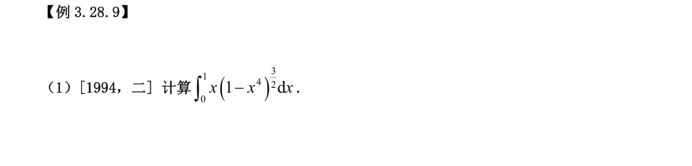
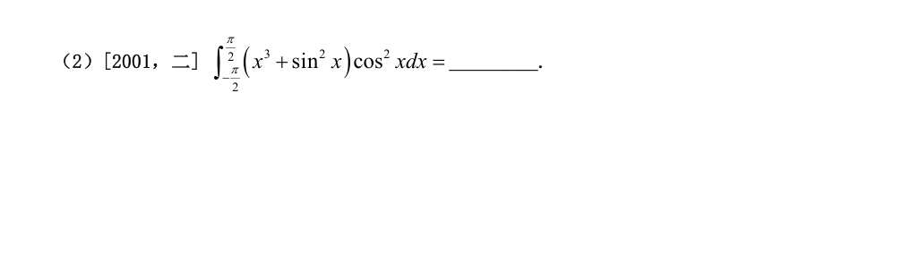
令 $u=x^2$，$du=2x\,dx$：
$$\int_0^1 x\left(1-x^4\right)^{3/2}dx=\frac{1}{2}\int_0^1\left(1-u^2\right)^{3/2}du.$$
再令 $u=\sin\theta$，$\theta:0\to\frac{\pi}{2}$：
$$=\frac{1}{2}\int_0^{\pi/2}\cos^4\theta\,d\theta=\frac{1}{2}\cdot\frac{3}{4}\cdot\frac{1}{2}\cdot\frac{\pi}{2}=\frac{3\pi}{32}.$$
（用了华里士公式 $\int_0^{\pi/2}\cos^4\theta\,d\theta=\frac{3}{4}\cdot\frac{1}{2}\cdot\frac{\pi}{2}$。）
对称区间：$x^3\cos^2 x$ 为奇函数，积分为 0；$\sin^2 x\cos^2 x$ 为偶函数。
$$\int_{-\pi/2}^{\pi/2}\sin^2 x\cos^2 x\,dx=2\int_0^{\pi/2}\frac{\sin^2 2x}{4}dx=\frac{1}{4}\int_0^{\pi}\sin^2 u\,du=\frac{1}{4}\cdot 2\int_0^{\pi/2}\sin^2 u\,du.$$
其中 $\int_0^{\pi/2}\sin^2 u\,du=\frac{\pi}{4}$，故该项 $=\frac{1}{4}\cdot 2\cdot\frac{\pi}{4}=\frac{\pi}{8}$。
$$\text{原式}=0+\frac{\pi}{8}=\frac{\pi}{8}.$$
（换算：$\sin^2 x\cos^2 x=\frac{1}{4}\sin^2 2x=\frac{1-\cos 4x}{8}$，直接积分亦得 $\frac{\pi}{8}$。）
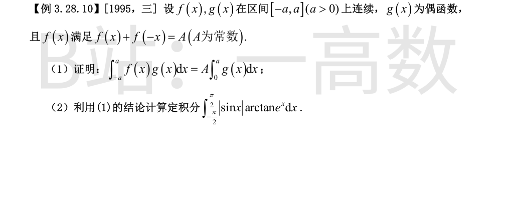
拆分区间并对负半段换元 $x=-t$：
$$\int_{-a}^{a}f(x)g(x)dx=\int_{-a}^{0}f(x)g(x)dx+\int_0^a f(x)g(x)dx,$$
$$\int_{-a}^{0}f(x)g(x)dx=\int_a^0 f(-t)g(-t)(-dt)=\int_0^a f(-t)g(t)dt,$$
最后一步用了 $g(-t)=g(t)$（$g$ 偶）。
两式合并：
$$\int_{-a}^{a}f(x)g(x)dx=\int_0^a\left[f(x)+f(-x)\right]g(x)dx=\int_0^a A\,g(x)dx=A\int_0^a g(x)dx.$$
证毕。
取 $f(x)=\arctan e^x$，$g(x)=|\sin x|$（偶函数），$a=\frac{\pi}{2}$。
对 $x\in[-\frac{\pi}{2},\frac{\pi}{2}]$，$e^x>0$，由 $\arctan u+\arctan\frac{1}{u}=\frac{\pi}{2}\ (u>0)$：
$$f(x)+f(-x)=\arctan e^x+\arctan e^{-x}=\frac{\pi}{2}=A.$$
又 $\int_0^{\pi/2}|\sin x|\,dx=\left[-\cos x\right]_0^{\pi/2}=1$。
由 (1) 的结论：
$$\int_{-\pi/2}^{\pi/2}|\sin x|\arctan e^x\,dx=\frac{\pi}{2}\cdot 1=\frac{\pi}{2}.$$
故原积分 $=\frac{\pi}{2}$。
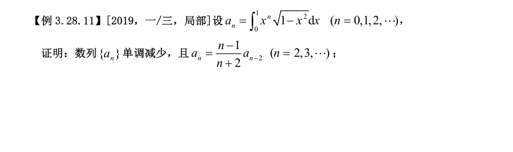
**单调性**：当 $0\le x\le 1$ 时 $x^{n+1}\le x^n$，且在 $(0,1)$ 内严格小，故
$$a_{n+1}=\int_0^1 x^{n+1}\sqrt{1-x^2}\,dx<\int_0^1 x^n\sqrt{1-x^2}\,dx=a_n,$$
即 $\{a_n\}$ 单调减少。
**递推关系**：把 $a_n$ 写成 $a_n=\int_0^1 x^{n-1}\cdot x\sqrt{1-x^2}\,dx$，取 $dv=x\sqrt{1-x^2}\,dx$，$v=-\frac{1}{3}(1-x^2)^{3/2}$。当 $n\ge 2$ 时 $\left[-\frac{x^{n-1}}{3}(1-x^2)^{3/2}\right]_0^1=0$（$x=1$ 处因子为零，$x=0$ 处 $x^{n-1}=0$），于是
$$a_n=\frac{n-1}{3}\int_0^1 x^{n-2}(1-x^2)^{3/2}dx=\frac{n-1}{3}\int_0^1\left(x^{n-2}-x^n\right)\sqrt{1-x^2}\,dx=\frac{n-1}{3}\left(a_{n-2}-a_n\right).$$
移项：$3a_n+(n-1)a_n=(n-1)a_{n-2}$，即 $(n+2)a_n=(n-1)a_{n-2}$，故
$$a_n=\frac{n-1}{n+2}a_{n-2},\qquad n=2,3,\dots.$$
证毕。